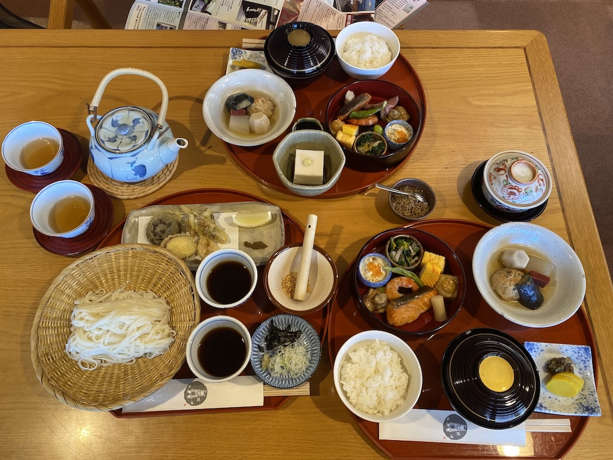

鎌倉流水帳
-
山陀兒颱風，台北市停班停課。
2024-10-02 -
山陀兒颱風，台北市停班停課。
2024-10-03 -
松山機場
??:??早上確定班機還沒取消後就按原計劃出發，走到內湖捷運站這一段雨不大但是風非常大，不過因為在松山機場搭機，所以一進捷運站就不需要再撐過傘了。
在捷運站等了一段時間，因為事先查好捷運首班車到達松山機場的時間，所以也沒太慌張。
到機場報到後就開始亂晃，松山機場果然小，感覺很多店家都沒開張。
在飛機上，妮娜前面的小姐把椅子倒得很後面，她的男伴很快看了我一眼並露出抱歉的神色，妮娜跟我看到後一瞬間就理解了（就是遇到公主了啊！）。我跟妮娜在預辦登機時都選了特殊餐點（我選低脂餐），好處是比所有人先拿到餐點，壞處是比所有人先吃完，接著只能看別人吃，而且沒有餐包。我看了幾集《龍之家族》。
-
羽田機場
??:??下飛機後開啟漫遊（我們各訂了便宜的方案，最後離開日本時還綽綽有餘），立刻用手機開啟傳說中的西瓜卡，用起來就像悠遊卡，可以搭車購物，但是只需要手機，而且可以直接手機加值（反觀悠遊卡…）。
-
鎌倉
??:??入關後直接搭電車到鎌倉，直到離開日本前，全靠 Google Map 的路線指引搭大眾交通工具。
到鎌倉後直接去 Plat hostel keikyu kamakura wave 寄放行李，然後出外覓食，開始第一天的行程。
-
ZUSHI-CURRY
14:20咖哩飯店的造型很特別，不過我們沒有拍照，圖片取自 Google Street View 。 到 ZUSHI-CURRY 午餐。原本想點 Two Curries Combo 或 Vegetable Curry ，不過都賣完了。最後妮娜點了 Lemon Keema Curry ，我點了 Beef tendon and tomato curry ，都挺好吃。
-
高德院
15:00吃完咖哩飯後繼續往高德院前進，就是傳說中的鎌倉大佛。經過這個景點後，我總是說它「見面不如聞名」，一來沒有想像中大，二來景點太熱門人太多。
-
OKASHI0467
15:50圖片取自 Google Street View 。 到OKASHI0467吃了甜點。我們在二樓邊吃邊閒聊，還有另一組（兩三個）客人在話家常（日文）。
-
Bent
??:??圖片取自 Google Street View 。 走到海邊（由比濱）看了一眼，然後到一家二手服飾店 Bent 晃了一下。是家妮娜在台灣就追蹤的店，店面小小的，比家裡的客廳還小。
-
Plat hostel keikyu kamakura wave
??:??回青旅辦理入住並休息。房間跟網路上的照片一致，小小的空間，一張含簾子的（擋住房裡的大燈）雙層床，一個開放式衣架、一個開放式洗手檯加梳妝台、一個乾濕分離浴室。麻雀雖小，五臟俱全。妮娜借了個燙頭髮的道具來玩，我也立刻燙到手指，所幸冰敷之後沒什麼大礙。
晚餐到鎌倉車站外的超市買了便當跟小菜回青旅吃。
-
秋陽下的古蹟漫步
2024-10-04 -
鶴岡八番宮
09:50二の鳥居。 在二の鳥居拍照，是條約五百公尺長人行道的起點，人行道兩邊種了兩排樹跟一些「碑」，看起來像是在台灣廟宇會看到的「捐獻記錄」。有些人在鳥居這留下照片，最特別的是一群中學生，因為已經是台灣的上課時間。後來發現鶴岡八番宮裡有更多學生，有些還有大人帶著，可能是校外教學。走完五百公尺到 三の鳥居 是一個 π 字形的路口，整個路口畫滿人行道挺有趣。過了太鼓橋後看到超大的「江戶砂糖店」奉獻燈，原來賣砂糖這麼賺錢！右轉到旗上弁財天社，我們開始在這裡練習日本人「拜拜的手勢」（從遊客導覽上看來的）。辯才天其實就是財神，不過寫成「弁財天」感覺法力又高了一個級別。我們也投了一些香油錢，不過時至今日（2025-04-10）願望還沒實現（一億倍 or 一兆倍返還）。往西到鎌倉文華館ー鶴岡美術館晃了一圈，文藝氣息濃厚（因為沒什麼遊客，我們就是喜歡人少的地方），不過因為時間有點趕就沒進去參觀了。一路從若宮跟本宮晃去，然後經過丸山稻荷社離開（我走了幾階梯子上去看了一眼，看到學生在拍照就直接離開了）。
-
神奈川縣立近代美術館ー鎌倉別館
10:50妮娜似乎很想參觀，不過最後只在外頭拍拍照，為了午餐繼續前進。
-
鉢の木 北鎌倉新館
11:30 豐盛的午餐。 妮娜訂的餐廳。店員一開始沒在名單上找到我們，讓我們坐在小角落，後來對上後就讓我們移到靠窗的大位子（四人）。我們各點了一分套餐，再加一份冷麵，冷麵的份量不少，不過我們還是吃個精光。隔壁桌有個西方大女生，吃完餐後繼續吃冰淇淋，還好我們忍住沒加點。有個像主廚的員工來跟我們用英文聊了幾句，問我們接下來的行程，我們拿出觀光手冊指了一些地方，主廚表示這些都不錯 🤣。
-
東慶寺
??:??吃完飯就到附近的東慶寺晃晃，雖然遊客手冊上給了很高的評價，但是沒什麼遊客。門口的告示板（日本特有的屋型告示板）上有張日文說明，我們用 Google Translate 的拍照翻譯功能研究了一下，大意是說這邊不是觀光景點，有人會在這裡修行，不過歡迎參觀，但是請不要拍照。所以我們雖然很喜歡這裡（因為人少），卻一張照片都沒有。可能也因此這裡沒什麼人。是個安靜的寺院，有大鐘、種滿了樹跟花草，後方有條路似乎通往墓地。可以脫鞋進大堂參觀，進去後感覺很平靜（因為沒人來參觀吧 🤣）。
-
円覚寺
13:15收起梯子的建築……人少就是舒服。 離開東慶寺後穿越橫須賀線鐵道，來到円覚寺。跟高德院或鶴岡八番宮比起來，這裡的遊客少很多，我們也帶走不少照片。範圍很大，有不少有趣的小建築，路上有光頭的僧人走動。因為人少，我們也能悠閒地四處探頭探腦。
-
明月院
??:??離開円覚寺後走到附近傳說中的明月院，收門票且不能拍照，似乎季節不對加上時間有點晚，進去晃了一圈就離開了，又是個見面不如聞名的景點 🤣。
-
café vivement dimanche
16:00妮娜提議搭公車回市區吃甜點。因為甜點店快打烊了，所以來不及按原計劃走路經「錢洗弁財天」回到市區。回到 21 號公路（其實就兩線道）等公車。公車時刻就直接寫在站牌上，而且到站時間居然還差不多 🫡。到了店門外有人坐在店外的椅子上，問了人才知道要登記排隊。候位時第一次看到人力車的車伕。café vivement dimanche 沒有英文菜單，妮娜靠著 Google 上的照片完成點餐：上面蓋著一顆布丁的奶昔、冰淇淋鬆餅、奶茶。
-
Muji & Patagonia
??:??吃完甜點天還亮著，本來想到 Muji 買個洗衣袋，後來什麼都沒買就離開了。事後也證明：沒空洗衣服。妮娜特愛 Patagonia ，進店東試西試後買了三件衣服，還聲稱很便宜（我是沒研究啦）。這時還想著要買洗衣袋來洗這三件衣服，然後就可以在日本穿了，事後證明：沒洗過也是可以在日本穿的。
-
Plat hostel keikyu kamakura wave
18:35回青旅小睡一下。妮娜再次去東急超市買便當，我則去麥當勞。回青旅解決，日本的麥當勞就是比較好吃。
-
細雨中的江之電
2024-10-05 -
朝食屋コバカバ
08:25不習慣的早餐。 妮娜說早餐要吃點不一樣的，吃了在台灣會當作午餐或晚餐的定食。
-
Little Mermaid Kamakura
??:??往錢洗弁財天出發，先在鎌倉站後站觀察了一下江之電，然後就繼續移動了。路上經過一家小美人魚麵包店，買了些麵包，不錯吃。
-
錢洗弁財天宇賀福神社
09:25路邊有個鳥居，鳥居後是個隧道，進去後是個有趣的神社。進去晃了一圈，不大，不過有不少觀光客。
認真洗錢中，顯然洗不出我想要的結果。 洞中的擺設。 買了道具之後開始玩起求財的遊戲，首先去點燭，然後用蠟燭點香，放到旁邊的大香爐裡，然後拉鈴鐺祈福，最後掏出鈔票到山洞裡舀水洗錢，最後把錢擦乾回收。不過直到現在（2025-04-10）願望還沒實現，看來旗上弁財天加上錢洗弁財天的法力還是不行啊。山洞裡有很多擺設，也正因它們擺在山洞裡，顯得格外有趣。
醬油丸子小店。 洗完錢後到旁邊的小店吃醬油丸子喝茶，店員很認真地用日文跟我們解釋了很多，我們也很認真地聽不懂，最後靠谷歌翻譯機知道是茶可以回沖的意思。後來又來了一對台灣的客人，店員對我們笑一笑指著他們，所以我們就幫店員跟他們解釋：「茶可以回沖」。
-
鎌倉駅
10:50火車出站，月台冷清了一下，就一下下。 離開錢洗弁財天後直奔鎌倉站買了江之電一日券，一日券的好處是當我們在車站搞不清楚狀況的時候（沒有站務人員）可以大搖大擺的進出站。月台人很多，想拍火車也會拍到一堆路人。
-
bills
12:00我們一開始搞不清楚狀況點了太多，還好店員提醒，吃完後也確實覺得有點飽。香蕉鬆餅很讚。後來隔壁來了兩個人，其中一位吃沒幾口就走了，另一位比較時髦，坐了很久但一樣沒吃多少。吃完後妮娜提議搭火車去逛 Montbell 的 Outlet 。再往西走，經過傳說中的「灌籃高手平交道」，很多人在拍照，也有人在維持秩序，不過沒有任何看板說明，感覺在日本人眼中不認為這是個景點。
傳說中的灌籃高手平交道……的下一個平交道。 -
Grandberry Park
17:00腰越車站外的江之電。 從腰越車站搭到江之電的末站藤澤，轉小田急江之島線，轉東急田園都市線到 Grandberry Park 。我們把身上的包包放到寄物櫃後就出發了。這裡的 Montbell 非常大，戶外還有一個小攀岩場跟一個水池（放獨木舟）。我們開始四處亂逛，雖然折扣品有九折，但是不退稅。我想之後到東武百貨有退稅的話再買就可以了。妮娜逛了一下 Snow Peak，不過價格沒有比較實惠，所以也沒買。結束後搭電車前往鵠沼海岸站吃法國菜。
-
Restaurant NORI et NOJI
19:00這應該是妮娜最期待的店了。在台灣時一直訂不到位。網站的訂位系統有問題，留言系統也故障，最後我在 Facebook 上找到電子信箱才寄信訂位。到羽田機場後收到回信，來回幾次之後才終於確定。
是一間小店，只有一位主廚跟一位外場，能接待最多四組客人，一來空間不大，一來主廚應該也忙不過來。用餐過程中主廚不斷透過窗子觀察我們的用餐進度，感覺是算好時間上菜的（一次一道，吃完才換下一道）。因為訂位時提到這是生日餐，主廚幫妮娜準備了一個小蛋糕。用完餐後主廚跟我們聊了一下，說他很好奇為什麼我們會訂位來吃（鵠沼海岸就是鄉下地方）。妮娜提起是在書上看到後，主廚就去拿出那本中文書了。他表示這是上海的朋友送的，但他完全不知道內容在說什麼。妮娜幫他找到提到餐廳的段落。
離開餐廳後我們散步到鵠沼車站搭江之電回鎌倉。路上已經烏漆抹黑了。回到鎌倉站後月台已是空無一人，有台電車也下班了，終於可以好好拍照。
只要願意走夜路，路人就不會入鏡了！ -
豔陽下的葉山町
2024-10-06 -
神奈川縣立近代美術館 葉山館
12:00據說很可愛的人偶。 妮娜最期待的美術館，所以才千里迢迢地搭公車過來，結果休館。在地下閱覽室隨意翻看刊物後又繞著美術館晃了一圈。庭中有人偶雕塑，妮娜表示想買這個造形的紀念品，不過一樣…休店。因為天氣很好，我們決定走到下一個景點。
-
森戶神社
13:36大人歡天喜地，小孩哭天搶地！ 🤣 一進到神社就很熱鬧，一群家長帶著嬰兒來進行像抓周的儀式。所有參加的小孩都換上丁字褲，並輪流由力士舉起嬰兒，旁邊神官打扮的人則嘰哩呱啦的說了一堆話（全日文）。
在海邊看著老樹吃點心。 搭電車回鎌倉時，看到可以搭的車就上車了，看到雙層的車廂就衝了，整個車廂只看到一個乘客，然後就被站務人員趕到一般車廂去了 🤣。
-
山と道 鎌倉
??:??回到鎌倉後妮娜提議要去逛一家登山用品店，走到之後才發現是山と道。 好奇地翻看他們的背包，不過因為在台灣已經研究過，沒打算買，所以也沒認真看。妮娜認真挑了一頂藍色的帽子（結果回台灣後，要去基隆時把帽子忘在南京號上，還好有拿回來）。
-
麥當勞 vs 鯉之助
19:20晚餐妮娜想吃壽喜燒，我沒什麼興趣，所以妮娜先從青旅出發用餐。我晚些出發去吃麥當勞，還在店外跟妮娜做了一些手勢，店員以為我也想進去吃。日本的麥當勞就是比較好吃。吃完飯後妮娜提議四處亂逛。
-
一の鳥居
??:??我們沿著 21 號公路繼續走，走到鎌倉体育館。這裡有個鳥居，今天（2024-12-22）為了寫記錄才知道鶴岡八番宮前有三個鳥居。
-
鎌倉駅後車站
21:15往回走到後車站，雖然都打烊了，不過看起來有不少店家，妮娜表示惋惜 🤣。 妮娜指名景點。 一個字都看不懂，但是感覺很有計劃。 -
鐵頭的購物行程！
2024-10-07 -
東京濱町飯店
??:??早上在東急超市買了點食物就直奔下一個飯店，寄放完行李就出發前往（鐵頭的）重頭戲。
-
池袋東武 Montbell
??:??百貨很大，不過整層的客戶都集中在 Montbell 。我預先已決定要買的東西，所以一樣樣找，最後在這花光所有剩下的現金。有幾樣東西找不到，然後問店員，店員會很認真的幫我找，然後再無奈的表示賣完了。
-
HARBS
18:00 -
細雨中的東京
2024-10-08 -
明治神宮
10:30主體看起來很莊嚴，但是遊客太多，感覺不到所謂「神道」。 明治神宮很大，人很多，下小雨。在 Restaurant Yoyogi 午餐。在 FOREST TERRACE 明治神宮 売店「杜」 買了一些紀念品，可惜沒有我喜歡的古銅色磁鐵。
-
Tomod's
??:??妮娜說想到藥妝店買東西，不過太晚店都打烊了，結果在飯店前發現最後一家，妮娜也很認真的挑到打烊。
-
回家囉
2024-10-09 -
T-CAT
退房後直接走到附近的 T-CAT ，因為已經訂票了，所以現場雖然人不少但也沒有排隊的壓力。
-
羽田機場
買了一些禮品（抹茶蛋糕之類），並使用了密技：結帳時混用零錢跟信用卡。所以沒有帶日幣零錢回台（實際上我也沒有日幣了）。飛機上又看了幾集《龍之家族》。
-
松山機場
下了飛機進了關就直接搭捷運回家。事後我們一直感嘆：當初多花點錢從松山機場進出真是花對地方了。